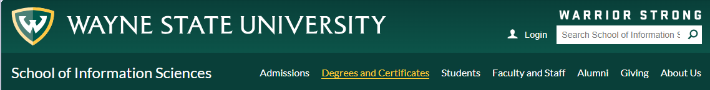
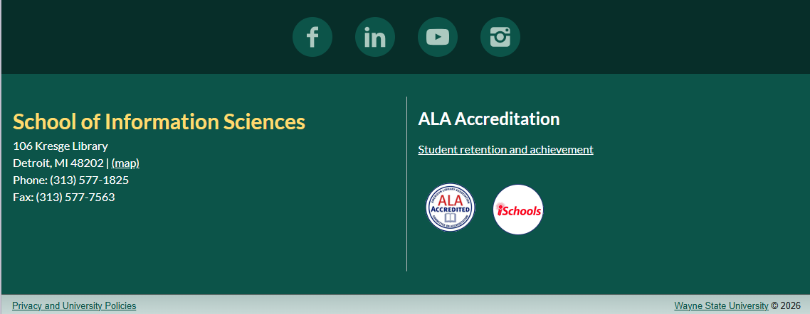
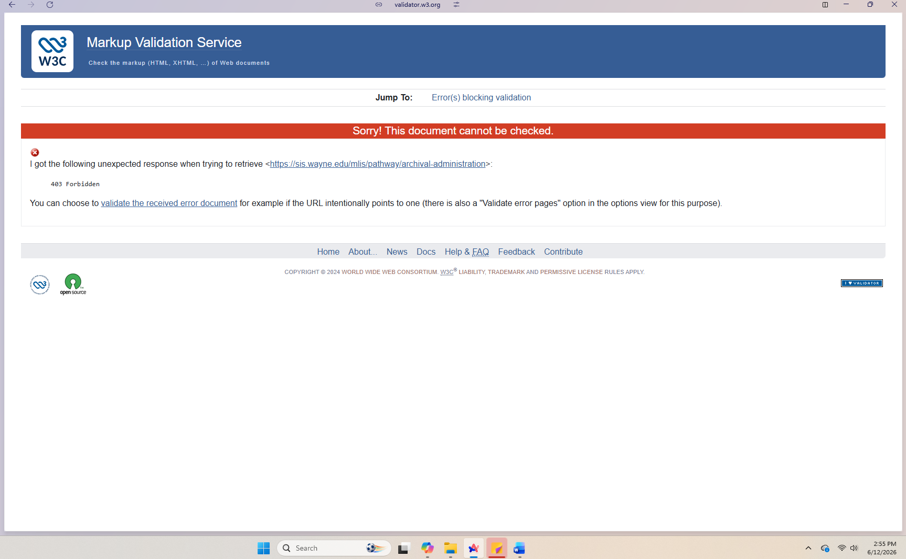

Major Sections
Site Header

The site header appears at the top of the page and contains the Wayne State University logo, institutional branding, and global navigation elements. This section should be marked up using the <header> element because it introduces the site and provides consistent identity information across the domain. The header also contains navigation links that help users orient themselves, which is a core function of a semantic header.
Main Navigation

The navigation bar includes multiple links such as “Degrees and Certificates,” “Master of Library and Information Science,” “Career Pathways,” and “Archival Administration” which are key areas of the School of Information Sciences website. This section should be marked up using the <nav> element because its primary purpose is to provide a structured set of navigational links that help users move through the site. The <nav> element is appropriate here because the links form a major navigation block rather than inline or contextual links.
Primary Content Area

The main content area contains the <h1> “Career Path: Archival Administration,” descriptive text about the pathway, course listings, and professional organization information. This section belongs inside the <main> element because it represents the central content of the page — the information users are primarily visiting to read. Within <main>, individual topics such as “Courses,” “Professional Organizations,” and “Career Opportunities” can be further grouped using <section> elements to improve structure and readability.
Page Footer

The footer appears at the bottom of the page and includes institutional contact information, links to university resources, and legal or administrative information. This section should be marked up using the <footer> element because it provides supporting information that applies to the entire site rather than the specific page. The footer helps users find additional resources and is a standard semantic container for closing site-wide content.
Heading Hierarchy
The page uses a clear and logical heading hierarchy:
- H1: “Career path: Archival administration” — This is the main title of the page and represents the highest-level topic, so it should be marked as the single H1 heading.
- H2: “Courses” — This heading introduces a major section of the page that outlines the recommended coursework for the archival administration pathway. As a primary subsection under the page title, it should be an H2.
- H3: Individual course titles — Each course title functions as a subsection within the larger “Courses” section, so these should be marked as H3 headings to show they are nested under the H2.
- H2: “Professional Organizations” — This heading introduces another major thematic section of the page. Because it is parallel in importance to “Courses,” it should also be an H2.
- H3: Organization names — Each organization listed is a subtopic within the “Professional Organizations” section, so these should be H3 headings.
- H2: “Career Opportunities” — This heading introduces a new major section describing potential job paths. As a top-level section under the main page title, it should be an H2.
Lists
A. Main Navigation Menu
The main navigation menu at the top of the page should be marked up using an unordered list (<ul>). This is because the navigation links do not follow a numerical or sequential order; instead, they represent a set of equally important navigation options. Each list item contains a hyperlink, making this a list of linked items that help users move between major sections of the Wayne State website.
B. Courses List

The list of recommended courses for the archival administration pathway should also be marked up using an unordered list (<ul>). The courses are not meant to be taken in a strict order, and the list is meant to group related items rather than present a sequence. Each list item contains plain text course titles, sometimes accompanied by short descriptions, making this a text based informational list rather than a list of links.
C. Professional Organizations

The list of professional organizations should be marked up using an unordered list (<ul>)because the organizations are not ranked or ordered; they are simply grouped as relevant resources. Each list item contains a hyperlink to an external website, making this a mixed list of organization names and outbound links.
Link Analysis
The Archival Administration pathway page contains a mix of internal and external links that help users navigate both the Wayne State University website and relevant professional resources. The following examples illustrate how these links function and whether they should open in the same tab or a new one.
Internal Links
Internal links are those that keep the user within the wayne.edu domain. These links help users move between related pages without leaving the university’s website.
- “MLIS Program” — This link directs users to the main Master of Library and Information Science program page. It is an internal link because it remains within the wayne.edu domain.
- Course description links — Some course titles link to detailed course descriptions hosted on the School of Information Sciences website. These are internal links because they point to pages within the same academic unit.
- “Student Resources” — This link leads to a centralized resource page for current students. It is internal because it stays within the university’s website structure.
Internal links should open in the same tab.
External Links
External links take users outside the Wayne State domain to professional organizations or industry resources.
- Society of American Archivists (SAA)- This link directs users to the national professional organization for archivists. Because it leaves the university website, it is an external link.
- Midwest Archives Conference (MAC)- This link leads to a regional archival organization’s website, making it an external link.
- American Library Association (ALA)- This link points to the ALA website, which is outside the Wayne State domain.
External links should open in a new tab to prevent users from losing their place.
The page does not use visual indicators to distinguish external links.
Accessibility Review (WAVE)
I evaluated the Archival Administration pathway page using the WAVE Web Accessibility Evaluation Tool. The report showed 0 errors, meaning no accessibility violations were automatically detected. The page received an AIM Score of 9.8 out of 10, indicating strong overall accessibility. WAVE also reported 7 alerts, which are not errors but potential issues worth reviewing.

Most Significant Issues Identified
- Redundant alternative text (3 instances): WAVE flagged several images where the alt text repeats information already conveyed by nearby text. Redundant alt text can create unnecessary repetition for screen reader users, reducing clarity and efficiency.
- Long alternative text (2 instances) : A few images contain alt text that is overly long or descriptive. While alt text is important, excessively long descriptions can overwhelm users relying on assistive technology.
Alt Text Evaluation
According to the WAVE “Details” panel, the page does include alt text for all images, and none of the images are missing descriptions. The issues relate to quality, not absence — meaning the page is accessible but could be improved with more concise alt text.
Actionable Improvement
A specific improvement would be to revise the alt text to remove redundancy and shorten overly long descriptions. For example, instead of repeating the full text of a linked heading or paragraph, the alt text could briefly summarize the image’s purpose (e.g., “SIS program banner” rather than a full sentence).
HTML Validation (W3C)
https://validator.w3.org/check?uri=https://sis.wayne.edu/mlis/pathway/archival-administration&charset=(detect+automatically)&doctype=Inline&group=0I evaluated the Archival Administration pathway page using the W3C HTML Validator. When I entered the page URL and attempted to run the validation, the tool returned the message “Sorry! This document cannot be checked.” This message indicates that the validator was unable to retrieve the page’s HTML source due to server restrictions. Many university websites, including Wayne State’s, block automated tools from accessing their pages for security reasons.

Because the validator could not access the page, no errors or warnings were reported, and the tool was unable to analyze the underlying HTML. This does not mean the page is error free; it simply means the validator was prevented from loading the content.
Actionable Improvement
To validate the page manually, the site owner (or a developer with access) could download the HTML file and upload it directly to the W3C Validator. This would bypass the server restriction and allow a full analysis of the page’s markup.
Summary
Overall, the Archival Administration pathway page is well structured, accessible, and thoughtfully organized for students exploring this career direction. The page uses semantic HTML elements effectively, with a clear header, navigation menu, main content area, and footer that support both readability and usability. The heading hierarchy is logical and consistent, helping users understand how the content is grouped and how each section relates to the overall topic. The WAVE accessibility review showed no errors and only minor alerts, indicating strong compliance with accessibility standards, and the issues identified were related to alt text quality rather than missing information. Although the W3C Validator could not check the page due to server restrictions, the overall structure and accessibility findings suggest that the page is built with modern web standards in mind. In general, the page provides a strong example of clear, accessible, and well organized academic web content.